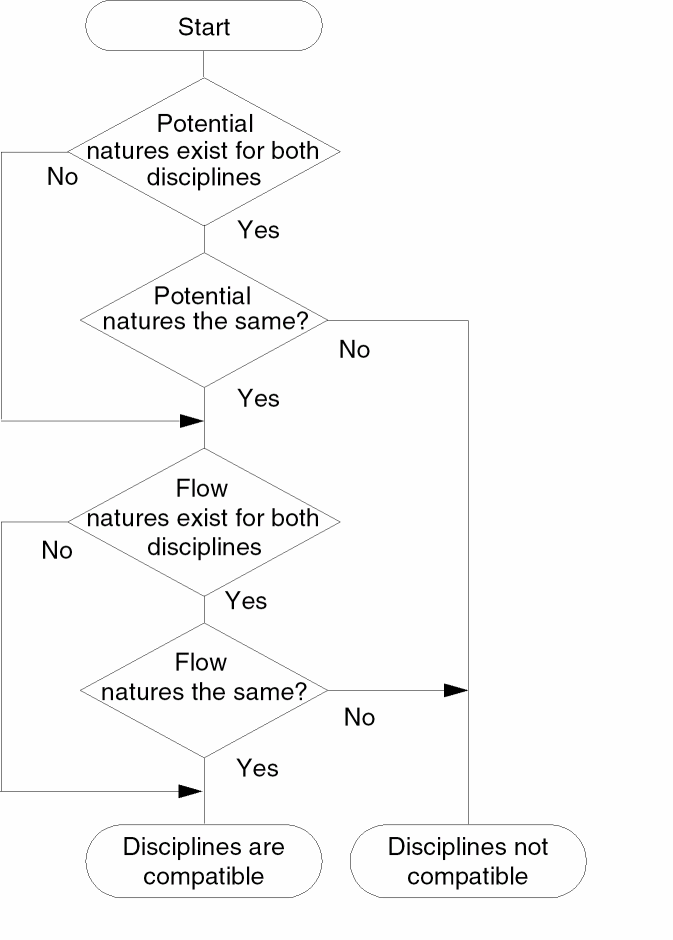

4
Data Types and Objects
The Cadence® Verilog®-AMS language defines these data types and objects. For information about how to use them, see the indicated locations.
- Real Numbers
- Parameters
- Dynamic Parameters
- Local Parameters
- Genvars
- Natures
- Disciplines
- Net Disciplines
- Ground Nodes
- Real Nets
- Named Branches
- Implicit Branches
-
Digital Nets and Registers
For information about digital nets and registers, see the “Registers and Nets” section, in the “Data Types” chapter of the Verilog-XL Reference.
Output Variables
Integer Numbers
Use the integer declaration to declare variables of type integer.
integer_declaration ::= integer list_of_identifiers ;
list_of_identifiers ::= var_name { , var_name}
var_name ::= variable_identifier [ =integer_constant_expression ] | array_identifier [ range ] [=integer_constant_arrayinit ]
range ::= upper_limit_const_exp : lower_limit_const_exp
integer_constant_arrayinit ::=
'{ integer_array_init_element_list }
integer_array_init_element_list ::=
integer_constant_expression { , integer_constant_expression }
In Verilog-AMS, you can declare an integer number in a range at least as great as -231 (-2,147,483,648) to 231-1 (2,147,483,647).
To declare an array, specify the upper and lower indexes of the range. Be sure that each index is a constant expression that evaluates to an integer value.
integer a[1:64] ; // Declares array of 64 integers
integer b, c, d[-20:0] ; // Declares 2 integers and an array
parameter integer max_size = 15 from [1:50] ;
integer cur_vector[1:max_size] ;
/* If the max_size parameter is not overridden, the
previous two statements declare an array of 15 integers. */
integer x=13; //Declare an integer variable x and assign a value 13 to it
integer arr[1:3]={1,2,3}; // Declare an integer array and assign it the values {1,2,3}
The standard attributes for descriptions and units can be used with integer declarations. For example,
(* desc="index number", units="index" *) integer indx;
Although the desc and units attributes are allowed, Cadence tools, in this release, do nothing with the information.
x.Real Numbers
Use the real declaration to declare variables of type real.
real_declaration ::= real list_of_identifiers ;
list_of_identifiers ::= var_name { , var_name }
var_name ::= variable_identifier [ =real_constant_expression ] | array_identifier [ range ] [ =real_constant_arrayinit ]
range ::= upper_limit_const_exp : lower_limit_const_exp
real_constant_arrayinit ::=
'{ real_array_init_element_list }
real_array_init_element_list ::=
real_constant_expression { , real_constant_expression }
In Verilog-AMS, you can declare real numbers in a range at least as great as 10-37 to 10+37. To declare an array of real numbers, specify the upper and lower indexes of the range. Be sure that each index is a constant expression that evaluates to an integer value.
real a[1:64] ; // Declares array of 64 reals
real b, c, d[-20:0] ; // Declares 2 reals and an array of reals
parameter integer min_size = 1, max_size = 30 ;
real cur_vector[min_size:max_size] ;
/* If the two parameters are not overridden, the
previous two statements declare an array of 30 reals. */
real x=13.1; //Declare an real variable x and assign a value 13.1 to it
real arr[1:3]={1.1,2.2,3.3}; // Declare an real array and assign it the values {1.1,2.2,3.3}
Real variables have default initial values of zero.
The standard attributes for descriptions and units can be used with real declarations. For example,
(* desc="gate-source capacitance", units="F" *) real cgs;
Although the desc and units attributes are allowed, Cadence tools, in this release, do nothing with the information.
Converting Real Numbers to Integer Numbers
Verilog-AMS converts a real number to an integer number by rounding the real number to the nearest integer. If the real number is equally distant from the two nearest integers, Verilog-AMS converts the real number to the integer farthest from zero. The following code fragment illustrates what happens when real numbers are assigned to integer numbers.
integer intvalA, intvalB, intvalC ;
real realvalA, realvalB, realvalC ;
realvalA = -1.7 ;
intvalA = realvalA ; // intvalA is -2
realvalB = 1.5 ;
intvalB = realvalB ; // intvalB is 2
realvalC = -1.5 ;
intvalC = realvalC ; // intvalC is -2
If either operand in an expression is real, Verilog-AMS converts the other operand to real before applying the operator. This conversion process can result in a loss of information.
real realvar ;
realvar = 9.0 ;
realvar = 2/3 * realvar ; // realvar is 9.0, not 6.0
In this example, both 2 and 3 are integers, so 1 is the result of the division. Verilog-AMS converts 1 to 1.0 before multiplying the converted number by 9.0.
Strings
Use the string declaration to declare the variables of type string.
string_declaration ::= string list_of_identifiers ;
list_of_identifiers ::= variable_identifier { , variable_identifier}
A string is defined as follows:
string ::= " { Any_ASCII_character_except_newline } "
The following are some examples of the string variable:
string s1=”mystring”; //sets s1 to mystring
string s1; // sets s1 to a null value
initial s2=s1 // assigns s2 the value of string variable s1
You can use the string variable in both digital and analog blocks. In addition, the string variable written in analog block can be read in the digital block and vice versa. However, you cannot have a string variable specified in both digital and analog blocks in the same module.
The following example shows a string variable written in the analog block and read in the digital block:
module top;
electrical e;
string ab;
initial begin
#2 $display("digital block: ", ab);
end
analog begin
ab = "atest string";
V(e) <+ 1.4;
end
endmodule
You can use the ==, !=, <, <=, >, >= {Str1, Str2.... Strm}, and {multiplier{Str}} operators with the string variable.
Parameters
Use the parameter declaration to specify the parameters of a module.
parameter_declaration ::= parameter [opt_type] list_of_param_assignments ;
opt_type ::= real
| integer | string
list_of_param_assignments ::= declarator_init {, declarator_init }
declarator_init ::=parameter_id=constant_exp{ opt_value_range } |parameter_array_init
opt_type is described in “Specifying a Parameter Type”. Note that for parameter arrays, however, you must specify a type.
opt_value_range is described in “Specifying Permissible Values”.
parameter_id is the name of a parameter being declared.
param_array_init is described in “Specifying Parameter Arrays”.
As specified in the syntax, the right-hand side of each declarator_init assignment must be a constant expression. You can include in the constant expression only constant numbers and previously defined parameters or dynamic parameters.
Parameters are constants, so you cannot change the value of a parameter at runtime. However, you can customize module instances by changing parameter values during compilation. See “Overriding Parameter Values in Instances” for more information.
Consider the following code fragment. The parameter superior is defined by a constant expression that includes the parameter subord.
parameter integer subord = 8 ;
parameter integer superior = 3 * subord ;
In this example, changing the value of subord changes the value of superior too because the value of superior depends on the value of subord.
The standard attributes for descriptions and units can be used with parameter declarations. For example,
(* desc="Resistance", units="ohms" *) parameter real res = 1.0 from [0:inf);
Although the desc and units attributes are allowed, Cadence tools, in this release, do nothing with the information.
Specifying a Parameter Type
You must specify a default for each parameter you define, but the parameter type specifier is optional (except that you must specify a type for parameter arrays). If you omit the parameter type specifier, Verilog-AMS determines the parameter type from the constant expression. If you do specify a type, and it conflicts with the type of the constant expression, your specified type takes precedence.
Implicitly declared types and explicitly declared types can make parameter values look different when you examine their values. For example, you create a module testtype.
module testtype;
parameter c= {3’b000, 3’b111}, f= 3.4;
parameter integer c1 = {3’b000, 3’b111}, f1 = 3.4;
endmodule
You then use Tcl commands to examine the values:
xcelium> describe c
c..........parameter [5:0] = 6’h07
xcelium> describe c1
c1.........parameter (integer) = 7
xcelium> describe f
f..........parameter (real) = 3.4
xcelium> describe f1
f1.........parameter (integer) = 3
These results occur because c is a 6-bit value but c1 is a 32-bit value (because it is explicitly declared as an integer).
The three parameter declarations in the following examples all have the same effect. The first example illustrates a case where the type of the expression agrees with the type specified for the parameter.
parameter integer rate = 13 ;
The second example omits the parameter type, so Verilog-AMS derives it from the integer type of the expression.
parameter rate = 13 ;
In the third example, the expression type is real, which conflicts with the specified parameter type. The specified type, integer, takes precedence.
parameter integer rate = 13.0
In all three cases, rate is declared as an integer parameter with the value 13.
Specifying Permissible Values
Use the optional range specification to designate permissible values for a parameter. If you need to, you can specify more than one range.
opt_value_range ::=
from value_range_specifier
| exclude value_range_specifier
| exclude value_constant_expression
value_range_specifier ::= start_paren expression1 : expression2 end_paren
start_paren ::= [
| (
end_paren ::= ]
| )
expression1 ::=
constant_expression
| -inf
expression2 ::=
constant_expression
| inf
Ensure that the first expression in each range specifier is smaller than the second expression. Use a bracket, either “[” for the lower bound or “]” for the upper, to include an end point in the range. Use a parenthesis, either “(” for the lower bound or “)” for the upper, to exclude an end point from the range. To indicate the value infinity in a range, use the keyword inf. To indicate negative infinity, use -inf.
For example, the following declaration gives the parameter cur_val the default of -15.0. The range specification allows cur_val to acquire values in the range -∞ < cur_val < 0.
parameter real maxval = 0.0 ;
parameter real cur_val = -15.0 from (-inf:maxval) ;
parameter integer pos_val = 30 from (0:40] ;
gives the parameter pos_val the default of 30. The range specification for pos_val allows it to acquire values in the range 0 < pos_val <= 40.
In addition to defining a range of permissible values for a parameter, you can use the keyword exclude to define certain values as illegal.
parameter low = 10 ;
parameter high = 20 ;
parameter integer intval = 0 from [0:inf) exclude (low:high] exclude 5 ;
In this example, both a range of values, 10 < value <= 20, and the single value 5 are defined as illegal for the parameter intval.
Specifying Parameter Arrays
Use the parameter array initiation part of the parameter declaration (“Parameters”) to specify information for parameter arrays.
parameter_array_init ::=
parameter_array_id range = constant_param_arrayinit {opt_value_range}
range ::= [ constant_expression : constant_expression ]
constant_param_arrayinit ::= { param_arrayinit_element_list }
| ‘{ param_arrayinit_element_list }
| ‘{ replicator_element_list }
param_arrayinit_element_list ::= constant_expression { , constant_expression }
replicator_element_list ::=
| replicator_constant_expression {constant_expression}
parameter_array_id is the name of a parameter array being declared.
opt_value_range is described in “Specifying Permissible Values”.
replicator_constant_expression is an integer constant with a value greater than zero that specifies the number of times the associated constant_expression is to be included in the element list.
For example, parameter arrays might be declared and used as follows:
parameter integer
IVgc_length = 4;
parameter real
I_gc[1:IVgc_length] = ‘{4{0.00}};
V_gc[1:IVgc_length] = ‘{-5.00, -1.00, 5.00, 10.00};
Parameter arrays are subject to the following restrictions:
- The type of a parameter array must be specified in the declaration.
- An array assigned to an instance of a module must be of the exact size of the array bounds of that instance.
- If the array size is changed via a parameter assignment, the parameter array must be assigned an array of the new size from the same module as the parameter assignment that changed the parameter array size.
String Parameters
Use the string parameter declaration to declare a parameter of type string.
string_parameter_declaration ::=
parameter string stringparam = constant_expression {value_range};
stringparam is the name of the string parameter being declared.
constant_expression is the value to be assumed by stringparam.
For example, the following code declares a string parameter named tmdata and assigns the value table1.dat to it.
parameter string tmdata = "table1.dat" ;
In Verilog-AMS, the string parameter supports a range value. The range value must be enclosed in curly braces and preceded with an apostrophe (‘), as shown in the following example:
parameter string transistortype = "NMOS" from '{ "NMOS", "PMOS" };
parameter string filename = "output.dat" exclude '{ "" };
The string parameter can be used in both digital and analog blocks.
The parameter values can be overridden by using the defparam statement or by using the module instantiation statement (see Overriding Parameter Values in Instances).
Parameter Aliases
Use the aliasparam declaration to define one or more aliases for a parameter. With this capability, you can define alternative names that can be used for overriding module parameter values.
aliasparam_declaration ::=
aliasparam alias_identifier = parameter_identifier ;
Parameter aliases are subject to the following restrictions.
-
The type of
alias_identifier(real, integer, or string) is determined by theparameter_identifier, and its range of permissible values, if they are specified. -
There can be multiple aliases pointing to the same
parameter_identifier. -
The
alias_identifiermust not conflict with a differentparameter_identifier. -
The
alias_identifiermust not be used for any other object in the module. Equations in the module must referenceparameter_identifier, notalias_identifier.
You must not use both alias_identifier and its corresponding parameter_identifier to specify a parameter override. Similarly, you must not use multiple aliases corresponding to a single parameter_identifier to specify a parameter override.
For example, the module nmos includes the following declarations.
parameter real dtemp = 0 from [-‘P_CELSIUS0:inf) ;
aliasparam trise = dtemp ;
The first two instantiations of the module below are valid, but the third is not.
nmos #(.trise(5)) m1(.d(d), .g(g), .s(s), .b(b)) ;
nmos #(.dtemp(5)) m2(.d(), .g(g), .s(s), .b(b)) ;
nmos #(.trise(5), .dtemp(5)) m3(.d(d), .g(g), .s(s), .b(b)) ; // Illegal.
The third instantiation is illegal because overrides are specified for the parameter dtemp and also its alias trise.
You can also define an alias for the hierarchical system parameter function $mfactor, as shown below.
aliasparam my_m = $mfactor
Dynamic Parameters
Use the dynamicparam declaration to specify the parameters of a module.
parameter_declaration ::= dynamicparam [opt_type] list_of_param_assignments ;
The use of dynamic parameters enables you to change the value of a parameter during simulation. It also allows you to reference global parameters without having their values passed down through the hierarchy. This is done by supporting OOMR parameter references in defparam value expressions and parameter default value expressions.
Following are some important points that must be kept in mind while using dynamic parameters in Verilog-AMS.
- Dynamic parameters can be used at all places where normal parameters can be used. They are set exactly like normal parameters. In addition, dynamic parameters are evaluated as part of the normal parameter evaluation process as if they were normal parameters.
-
In contrast to normal parameters, OOMR references to dynamic parameters are allowed in
defparams.
Example:module top();
dynamicparam myvar = 0.133;
Boo B1;
...
...
endmodule
module Boo
Foo F1;
defparam top.B1.F1.param1 = top.myvar*3; // defparam usage
endmodule
-
Although OOMR references are not allowed in parameter assignments, the same effect can be achieved by having a local
defparam.
Example:module Foo();
parameter param1 = 0;
defparam param1 = top.myvar*2; // equivalent to allowing defparams to default // parameter values
endmodule
- It is illegal for a dynamic parameter to affect design topology.
- It is illegal for a parameter value that is dependent on dynamic parameters to affect design topology. A parameter is dependent on a dynamic parameter if the value of the dynamic parameter has an affect on the final computed value of that parameter.
- It is illegal for a parameter value that is dependent on dynamic parameters to be referenced from a digital context.
Local Parameters
Use the localparam declaration to specify the parameters of a module.
parameter_declaration ::= localparam [opt_type] list_of_param_assignments ;
You cannot directly modify local parameters using ordered or named parameter value assignments or the defparam statement.
Paramsets are subject to the following restrictions:
-
You cannot use the
alterandaltergroupstatements when you use paramsets. - You cannot store paramsets in the Cadence library.cell:view configurations (or “5x” configurations).
Genvars
Use the genvar declaration to specify a list of integer-valued variables used to compose static expressions for use with behavioral loops.
genvar_declaration ::= genvargenvar_identifier{,genvar_identifier}
Genvar variables can be assigned only in limited contexts, such as accessing analog signals within behavioral looping constructs. For example, in the following fragment, the genvar variable i can only be assigned within the control of the for loop. Assignments to the genvar variable i can consist of only expressions of static values, such as parameters, literals, and other genvar variables.
genvar i ; analog begin ... for (i = 0; i < 8; i = i + 1) begin V(out[i]) <+ transition(value[i], td, tr) ; end ...
end
The next example illustrates how genvar variables can be nested.
module gen_case(in,out);
input [0:1] in;
output [0:1] out;
electrical [0:1] in;
electrical [0:1] out;
genvar i, j;
analog begin
for( i=1 ; i<0 || i <= 4; i = i + 1 ) begin
for( j = 0 ; j < 4 ; j = j + 1 ) begin
$strobe("%d %d", j, i);
end
end
for( j = 0; j < 2; j = j + 1 ) begin
V(out[j], in[j]) <+ I(out[j], in[j]);
end
end
endmodule
A genvar expression is an expression that consists of only literals and genvar variables. You can also use the $param_given function in genvar expressions.
Natures
Use the nature declaration to define a collection of attributes as a nature. The attributes of a nature characterize the analog quantities that are solved for during a simulation. Attributes define the units (such as meter, gram, and newton), access symbols and tolerances associated with an analog quantity, and can define other characteristics as well. After you define a nature, you can use it as part of the definition of disciplines and other natures.
nature_declaration ::= nature nature_name [ nature_descriptions ] endnature
nature_name ::= nature_identifier
nature_descriptions ::= nature_description | nature_description nature_descriptions
nature_description ::= attribute = constant_expression ;
attribute ::= abstol
| access
| ddt_nature
| idt_nature
| units
| identifier | Cadence_specific_attribute
Cadence_specific_attribute ::= huge
| blowup
| maxdelta
Each of your nature declarations must
- Be named with a unique identifier
- Include all the required attributes listed in Table 4-3.
-
Be declared at the top level
This requirement means that you cannot nest nature declarations inside other nature, discipline, or module declarations.
The Verilog-AMS language specification allows you to define a nature in two ways. One way is to define the nature directly by describing its attributes. A nature defined in this way is a base nature, one that is not derived from another already declared nature or discipline.
The other way you can define a nature is to derive it from another nature or a discipline. In this case, the new nature is called a derived nature.
Declaring a Base Nature
To declare a base nature, you define the attributes of the nature. For example, the following code declares the nature current by specifying five attributes. As required by the syntax, the expression associated with each attribute must be a constant expression.
nature Mycurrent units = "A" ; access = I ; idt_nature = charge ; abstol = 1e-12 ; huge = 1e6 ;
endnature
Verilog-AMS provides the predefined attributes described in the “Predefined Attributes” table. Cadence provides the additional attributes described in Table 4-2. You can also declare user-defined attributes by declaring them just as you declare the predefined attributes. The Cadence AMS Designer simulator ignores user-defined attributes, but other simulators might recognize them. When you code user-defined attributes, be certain that the name of each attribute is unique in the nature you are defining.
The following table describes the predefined attributes.
| Attribute | Description |
|---|---|
|
Specifies a tolerance measure used by the simulator to determine when potential or flow calculations have converged. |
|
|
Identifies the name of the access function for this nature. When this nature is bound to a potential value, |
|
|
Specifies the units to be used for the value accessed by the access function. |
|
|
Specifies a nature to apply when the |
|
The next table describes the Cadence-specific attributes.
The next table specifies the requirements for the predefined and Cadence-specific attributes.
| Attribute | Required or optional? | The constant expression must be |
|---|---|---|
Consider the following code fragment, which declares two base natures.
nature Charge abstol = 1e-14 ; access = Q ; units = "coul" ; blowup = 1e8 ;
endnature
nature Current abstol = 1e-12 ; access = I ; units = "A" ;
endnature
Both nature declarations specify all the required attributes: abstol, access, and units. In each case, abstol is assigned a real value, access is assigned an identifier, and units is assigned a string.
The Charge declaration includes an optional Cadence-specific attribute called blowup that ends the simulation if the charge exceeds the specified value.
Disciplines
Use the discipline declaration to specify the characteristics of a discipline. You can then use the discipline to declare nets and regs. You can also associate disciplines with ports, as discussed in Chapter 11, “Mixed-Signal Aspects of Verilog-AMS.” Cadence provides definitions of many commonly used disciplines in the disciplines.vams file installed in your_install_dir/tools/spectre/etc/ahdl.
discipline_declaration ::= discipline discipline_identifier [ discipline_description { discipline_description } ] enddiscipline
discipline_description ::= nature_binding | domain_binding
nature_binding ::= potentialnature_identifier;
| flownature_identifier;
domain_binding ::= domain continuous ;
| domain discrete ;
You must declare a discipline at the top level. In other words, you cannot nest a discipline declaration inside other discipline, nature, or module declarations. Discipline identifiers have global scope, so you can use discipline identifiers to associate nets with disciplines (declare nets) inside any module.
Binding Natures with Potential and Flow
The disciplines that you declare can bind
- One nature with potential
- One nature with potential and a different nature with flow
-
Nothing with either potential or flow
A declaration of this latter form defines an empty discipline.
The following examples illustrate each of these forms.
The first example defines a single binding, one between potential and the nature Voltage. A discipline with a single binding is called a signal-flow discipline.
discipline voltage potential Voltage ; // A signal-flow discipline must be bound to potential.
enddiscipline
The next declaration, for the electrical discipline, defines two bindings. Such a declaration is called a conservative discipline.
discipline electrical potential Voltage ; flow Current ;
enddiscipline
When you define a conservative discipline, you must be sure that the nature bound to potential is different from the nature bound to flow.
The third declaration defines an empty discipline. If you do not explicitly specify a domain for an empty discipline, the domain is determined by the connectivity of the net.
discipline neutral
enddiscipline
discipline interconnect domain continuous
enddiscipline
In addition to declaring empty disciplines, you can also use a Verilog-AMS predefined empty discipline called wire.
Use an empty discipline when you want to let the components connected to a net determine which potential and flow natures are used for the net.
Binding Domains with Disciplines
The domain binding of a discipline indicates whether the signal value is an analog signal to be represented in continuous time or a digital signal to be represented in discrete time. The default domain is continuous for disciplines that are not empty. Signals in the continuous domain always have real values. Signals in the discrete domain can have real, integer, or binary (0, 1, x, or z) values.
The following example illustrates how to define a discipline for an analog signal. Because the default value for domain is continuous, the domain line in this example could be omitted.
discipline electrical domain continuous ; potential Voltage ; flow Current ;
enddiscipline
The next example defines a discipline for a digital signal.
discipline logic domain discrete ;
enddiscipline
Disciplines and Domains of Wires and Undeclared Nets
Nets that do not have declared disciplines are evaluated as though they have empty disciplines. The effective domain of such nets is determined by how the nets are used.
-
If the net is referenced in the digital context behavioral code or if its net type is other than
wire, then the domain of the net is assumed to bediscrete. -
If the net is bound only to ports and either has no declared net type or has a net type of
wire, then the net has no domain binding.
Discipline Precedence
Disciplines can be declared in several ways and if more than one of these ways applies to a single net, discipline conflicts can arise. Verilog-AMS resolves conflicts with the following precedence.
Compatibility of Disciplines
Certain operations in Verilog-AMS, such as declaring branches, are allowed only if the disciplines involved are compatible. Apply the following rules to determine whether any two disciplines are compatible.
- Any discipline is compatible with itself.
- An empty discipline is compatible with all disciplines.
-
Disciplines with the
discretedomain attribute and the same signal value type, such asbit,real, orinteger, are compatible. - Disciplines with different domain attributes are incompatible.
-
Other kinds of continuous disciplines are compatible or not compatible, as determined by following paths through Figure 4-1.
Figure 4-1 Analog Discipline Compatibility
Consider the following declarations.
nature Voltage access = V ; units = "V" ; abstol = 1u ;
endnature
nature Current access = I ; units = "A" ; abstol = 1p ;
endnature
discipline emptydis
enddiscipline
discipline electrical potential Voltage ; flow Current ;
enddiscipline
discipline sig_flow_v potential Voltage ;
enddiscipline
To determine whether the electrical and sig_flow_v disciplines are compatible, follow through the discipline compatibility chart:
-
Both
electricalandsig_flow_vhave defined natures for potential. Take the Yes branch. -
In fact,
electricalandsig_flow_vhave the same nature for potential. Take the Yes branch. -
electricalhas a defined nature for flow, butsig_flow_vdoes not. Take the No branch to the Disciplines are compatible end point.
Now add these declarations to the previous lists.
nature Position access = x ; units = "m" ; abstol = 1u ;
endnature
nature Force access = F ; units = "N" ; abstol = 1n ;
endnature
discipline mechanical potential Position ; flow force ;
enddiscipline
The electrical and mechanical disciplines are not compatible.
- Both disciplines have defined natures for potential. Take the Yes branch.
-
The
Positionnature is not the same as theVoltagenature. Take the No branch to the Disciplines not compatible end point.
Net Disciplines
Use the net discipline declaration to associate nets and regs with previously defined disciplines.
net_discipline_declaration ::=discipline_identifier[range] list_of_nets ;
| wire [range] list_of_nets ;
range ::= [ msb_expr : lsb_expr ]
list_of_nets ::= net_type | net_type , list_of_nets
msb_expr ::=
constant_expr
lsb_expression ::=
constant_expr
net_type ::=net_identifier[range] [=constant_expr|constant_array_expr]
The standard attribute for descriptions can be used with net discipline declarations. For example,
(* desc="drain terminal" *) electrical d;
Although the desc attribute is allowed, Cadence tools, in this release, do nothing with the information.
The initializers specified with the equals sign in the net_type can be used only when the discipline_identifier is a continuous discipline. The solver uses the initializer, if provided, as a nodeset value for the potential of the net. A null value in the constant_array_expr means that no nodeset value is being specified for that element of the bus. The initializers cannot include out-of-module references.
A net declared without a range is called a scalar net. A net declared with a range is called a vector net. In this release of Verilog-AMS, you cannot use parameters to define range limits.
magnetic inductor1, inductor2 ; //Declares two scalar nets
electrical [1:10] node1 ; //Declares a vector net
wire [3:0] connect1, connect2 ; //Declares two vector nets
electrical [0:4] bus = {2.3,4.5,,6.0} ; //Declares vector net with nodeset values
The following example is illegal because a range, if defined, must be the first item after the discipline identifier and then applies to all of the listed net identifiers.
electrical AVDD, AVSS, BGAVSS, PD, SUB, [6:1] TRIM ; // Illegal
out and in are specified before the electrical discipline declaration.Consider the following declarations.
discipline emptydis
enddiscipline
module comp1 (out, in, unknown1, unknown2) ; output out ; input in ; electrical out, in ; emptydis unknown1 ; // Declared with an empty discipline analog V(out) <+ 2 * V(in)
endmodule
Module comp1 has four ports: out, in, unknown1, and unknown2. The module declares out and in as electrical ports and uses them in the analog block. The port unknown1 is declared with an empty discipline and cannot be used in the analog block because there is no way to access its signals. However, unknown1 can be used in the list of ports, where it inherits natures from the ports of module instances that connect to it.
Because unknown2 appears in the list of ports without being declared in the body of the module, Verilog-AMS implicitly declares unknown2 as a scalar port with the default discipline. The default discipline type is wire, unless you use the `default_discipline compiler directive to specify a different discipline. (For more information, see “Setting a Default Discrete Discipline for Signals”.)
Now consider a different example.
module five_inputs( portbus ); input [0:5] portbus; electrical [0:5] portbus; real x; analog begin generate i ( 0,4 ) V(portbus[i]) <+ 0.0;
end
endmodule
The five_inputs module uses a port bus. Only one port name, portbus, appears in the list of ports but inside the module portbus is defined with a range.
Modules comp1 and five_inputs illustrate the two ways you can use nets in a module.
- You can define the ports of a module by giving a list of nets on the module statement.
- You can describe the behavior of a module by declaring and using nets within the body of the module construct.
As you might expect, if you want to describe a conservative system, you must use conservative disciplines to define nets. If you want to describe a signal-flow or mixed signal-flow and conservative system, you can define nets with signal-flow disciplines.
As a result of port connections of analog nets, a single node can be bound to a number of nets of different disciplines.
Current contributions to a node that is bound only to disciplines that have only potential natures, are illegal. The potential of such a node is the sum of all potential contributions, but flow for such a node is not defined.
Nets of signal flow disciplines in modules must not be bound to inout ports and you must not contribute potential to input ports.
To access the abstol associated with a nets’s potential or flow natures, use the form
net.potential.abstol
net.flow.abstol
For an example, see “Cross Event”.
Ground Nodes
Use the ground declaration to declare global reference nodes.
ground_declaration ::= ground list_of_nets ;
You use the ground declaration to specify an already declared net of continuous discipline. The node associated with that net then becomes the global reference node in the circuit. If used in behavioral code, the net must be used in only the differential source and probe forms. This requirement means that a form like V(gnd) is illegal but a form like V(in, gnd) is legal.
module loadedsrc(out); output out; electrical out; electrical gnd; // Declare a net of continuous discipline. ground gnd; // Declare the ground. parameter real srcval = 5.0; resistor #(.r(10K)) r1(out,gnd); analog begin V(out) <+ V(in,gnd)*2; // Probe the voltage difference // between in and gnd.
end
endmodule
Real Nets
Use the real net declaration to declare a data type that represents a real-valued physical connection between structural entities.
real_net_declaration ::= wreal list_of_nets ;
In the following example, the real variable, stim, connects to the wreal net, in:
module foo(in, out); input in; output out; wreal in; // Declares in as a wreal net. electrical out; analog begin V(out) <+ in;
end
endmodule
module top(); real stim; // Declares stim as a real variable. wreal wr_stim; assign wr_stim = stim; electrical load; foo f1(wr_stim, load); // Connects stim to in. always begin #1 stim = stim + 0.1;
end
endmodule // top
See also the following topics:
Arrays of Real Nets
To declare an array of real nets, specify the upper and lower indexes of the range. Be sure that each index is a constant expression that evaluates to an integer value. For example:
wreal w[3:2]; // Declares w as a wreal array.
The software supports full usage of part-selects of wreal arrays, including part-selects which refer to only a part of the full array.
Real Nets with More than One Driver
The Cadence implementation of the Verilog-AMS language supports more than one driver on a wreal net and the following states for wreal values:
| State | Description |
|---|---|
|
High-impedance state equivalent to the |
|
These state values are global values such that you can reference them in your Verilog-AMS code. For example:
module foo(x);
inout x;
wreal x;
integer error_cnt;
real result;
initial error_cnt = 0;
always @(x)
begin
if(x === `wrealZState)
result = 1.234;
if(x === `wrealXState)
error_cnt = error_cnt + 1;
end
assign x = result;
endmodule
Here is another example comparing a real value (aout) to `wrealZState:
module dac (out, in, clk);
parameter integer bits = 8 from [1:24]; // resolution (bits)
parameter real fullscale = 1.0; // output range is from 0 to fullscale (V)
output out;
wreal out;
input [0:bits-1] in;
input clk;
logic in, clk;
real result, aout;
real bitvalue;
integer i;
always @(posedge clk) begin
bitvalue = fullscale;
// aout = 0.0;
aout = `wrealZState;
for (i=bits-1; i>=0; i=i-1) begin
bitvalue = bitvalue / 2;
if (in[i])
if (aout === `wrealZState) <--- this line
aout = bitvalue;
else
aout = aout + bitvalue;
end
result = aout;
end
assign out = result;
endmodule
The program uses these the wrealZState and wrealXState state values to determine the resolved value of a wreal net with more than one driver. You can use the -wreal_resolution command-line option to select the wreal resolution function you want to use. If you do not use the -wreal_resolution command-line option to specify a resolution function, or if you specify -wreal_resolution default, the program uses the default resolution algorithm, which is as follows:
| Conditions | Resolution |
|---|---|
|
Drive the receivers using |
|
See “Selecting a wreal Resolution Function” in the Virtuoso® AMS Designer Simulator User Guide for other resolution functions you can specify.
See also the following topics in the Virtuoso AMS Designer Simulator User Guide:
- “Connecting VHDL and VHDL-AMS Blocks to Verilog and Verilog-AMS Blocks”
- “Connecting Verilog-AMS wreal Signals to Analog Signals“
- “Resolving Disciplines for Verilog-AMS wreal Nets“
- “Using wreal Nets at Mixed-Language Boundaries“
Named Branches
Use the branch declaration to declare a path between two nets of continuous discipline. Cadence recommends that you use named branches, especially when debugging with Tcl commands because, for example, it is easier to type value branch1 than it is to type value \vect1[5] vec2[1] and then compute the difference between the returned value.
branch_declaration ::= branch list_of_branches ;
list_of_branches ::= terminals list_of_branch_identifiers
terminals ::= (scalar_net_identifier)
| (scalar_net_identifier,scalar_net_identifier)
list_of_branch_identifiers ::=branch_identifier|branch_identifier, list_of_branch_identifiers
scalar_net_identifier must be either a scalar net or a single element of a vector net.
You can declare branches only in a module. You must not combine explicit and implicit branch declarations for a single branch. For more information, see “Implicit Branches”.
The scalar nets that the branch declaration associates with a branch are called the branch terminals. If you specify only one net, Verilog-AMS assumes that the other is ground. The branch terminals must have compatible disciplines. For more information, see “Compatibility of Disciplines”.
Consider the following declarations.
voltage [5:0] vec1 ; // Declares a vector net
voltage [1:6] vec2 ; // Declares a vector net
voltage sca1 ; // Declares a scalar net
voltage sca2 ; // Declares a scalar net
branch (vec1[5],vec2[1]) branch1, (sca1,sca2) branch2 ;
branch1 is legally declared because each branch terminal is a single element of a vector net. The second branch, branch2, is also legally declared because nodes sca1 and sca2 are both scalar nets.
Implicit Branches
As Cadence recommends, you can refer to a named branch with only a single identifier. Alternatively, you might find it more convenient or clearer to refer to branches by their branch terminals. Most of the examples in this reference, including the following example, use this form of implicit branch declaration. You must not, however, combine named and implicit branch declarations for a single branch.
module diode (a, c) ;
inout a, c ;
electrical a, c ;
parameter real rs=0, is=1e-14, tf=0, cjo=0, phi=0.7 ;
parameter real kf=0, af=1, ef=1 ;
analog begin I(a, c) <+ is*(limexp((V(a, c)-rs*I(a, a))/$vt) - 1); I(a, c) <+ white_noise(2* `P_Q * I(a, c)) ; I(a, c) <+ flicker_noise(kf*pow(abs(I(a, c)),af),ef);
end
endmodule
The previous example using implicit branches is equivalent to the following example using named branches.
module diode (a, c) ;
inout a, c ;
electrical a, c ;
branch (a,c) diode, (a,a) anode ; // Declare named branches
parameter real rs=0, is=1e-14, tf=0, cjo=0, phi=0.7 ;
parameter real kf=0, af=1, ef=1 ;
analog begin I(diode) <+ is*(limexp((V(diode)-rs*I(anode))/$vt) - 1); I(diode) <+ white_noise(2* `P_Q * I(diode)) ; I(diode) <+ flicker_noise(kf*pow(abs(I(diode)),af),ef);
end
endmodule
Return to top